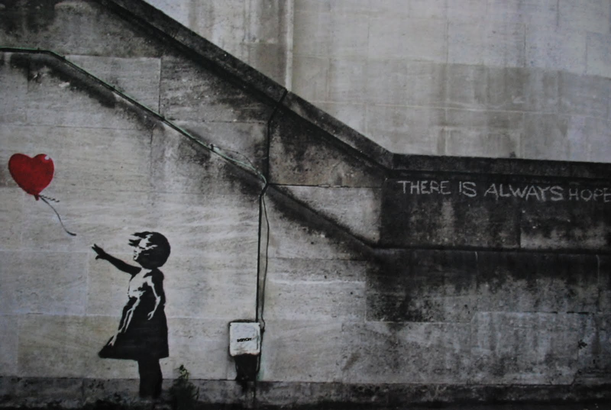
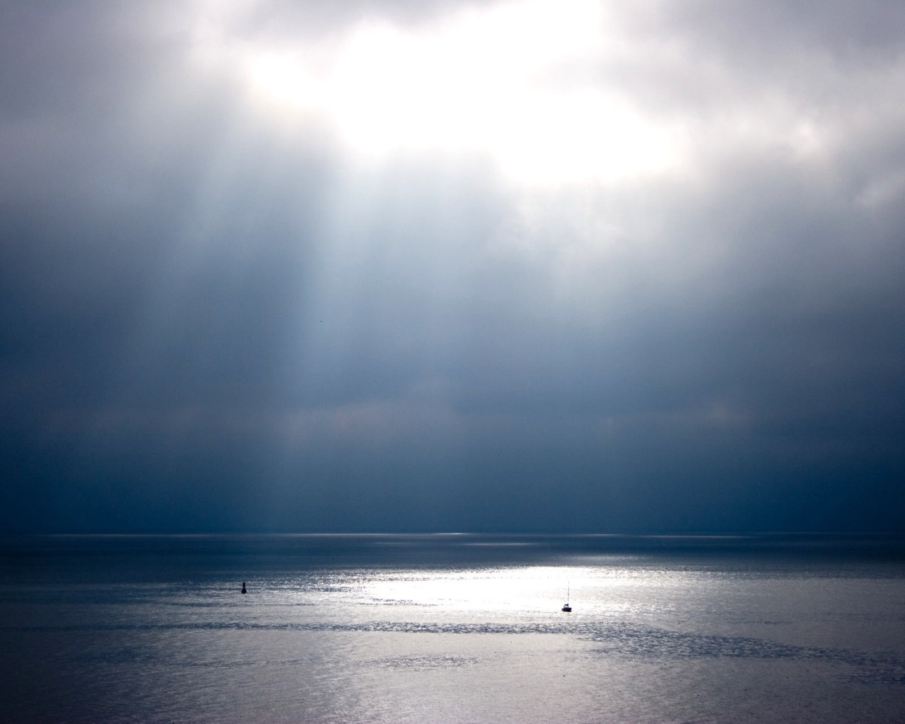
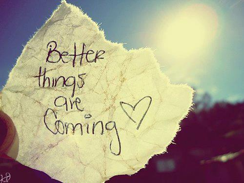
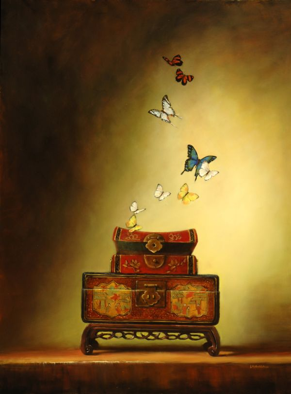

"Nada je san budnog čovjeka"
-citati nade-
Uči od prošlosti, živi za
danas, nadaj se za budućnost.
Jedina važna stvar je da
nikada ne prestaneš
postavljati pitanja.
-Albert Einstein-

Mi moramo prihvatiti
konačna razočarenja,
ali nikada ne smijemo
izgubiti beskonačnu nadu.
-Martin Luther King-
Tri osnove sreće u ovom
životu su imati
nešto da radiš,
nešto da voliš i
nešto čemu se možeš nadati.
-Joseph Addison-

Nemoj kvariti ono što imaš
priželjkujući ono što
trenutno nemaš. Nemoj
zaboraviti da je ono što sada
imaš u stvari ono za što si
se prije samo mogao nadati.
-Epikur-
Nikada ljudima
ne oduzimaj nadu;
ona može biti
sve što imaju.
-Jackson Brown-
Sve što je postignuto
na svijetu je urađeno
uz pomoć nade.
-Martin Luther-
Snažni umovi se
uvijek nadaju i
uvijek su uzrokovali nadu.
-Thomas Carlyle-
Kada izgubimo sve,
uključujući i nadu,
život će postati beščašće,
a smrt dužnost.
-W. C. Fields-
Čitava gomila
sjećanja nisu ravna
jednoj maloj nadi.
-Charles Schulz-

Živjeti bez nade znači
prestati živjeti.
-Fjodor Dostojevski-

Nada je poput
sunca koje,
kada putujemo ka njemu,
baca sjenku na tegobe
koje se nalaze iza nas.
-Samuel Smiles-
Nada je zadnja
stvar koju čovjek učini
prije svoga poraza.
-Henry Rollins-